索引的类型
B树(二叉搜索树)：
- 所有非叶子结点至多拥有两个儿子（
Left和Right）；
- 所有结点存储一个关键字；
- 非叶子结点的左指针指向小于其关键字的子树，右指针指向大于其关键字的子树；

B--tree多路搜索树（并不是二叉的）
B--tree特点:
- 定义任意非叶子结点最多只有
M个儿子，且M > 2；
- 根结点的儿子数为
[2, M]；
- 除根结点以外的非叶子结点的儿子数为
[M/2, M]；
- 每个结点存放至少
M/2-1（取上整）和至多M-1个关键字；（至少2个关键字）
- 非叶子结点的关键字个数 = 指向儿子的指针个数 - 1；
- 非叶子结点的关键字：
K[1], K[2], …, K[M-1]；且K[i] < K[i+1]；
- 非叶子结点的指针：
P[1], P[2], …, P[M]；其中P[1]指向关键字小于K[1]的子树，P[M]指向关键字大于K[M-1]的子树，其它P[i]指向关键字属于(K[i-1], K[i])的子树；
- 所有叶子结点位于同一层；
（M=3）

B+-tree(平衡二叉查找树)
B-Tree索引（大部分mysql存储引擎）B-tree的数据存储是有序的。加速数据的访问不用扫描整个表
数据库使用B+-tree结构（B--tree的变种）的原因
数据库的索引大都以索引文件的形式存储在磁盘上，索引查找的过程就会产生磁盘I/O消耗，索引结构组织能减少查找过程中磁盘I/O的存取次数。磁盘会做到按需读取，每次预读的长度都会为页（一个节点的大小）的整数倍，这样每个节点就只需要一次I/O就能全部载入。新建的节点会申请页空间，一个节点物理上也存储在一个页里，计算机存储分配都是按页对齐的，这样就能一次I/O完全载入一个node。B+-tree的m值越大，树的高度越低，有利于一次完全载入
一颗m阶的B+-tree(二叉查找树)的特性如下（其中ceil(x)是一个取上限的函数）
- 树中每个结点至多有
m个孩子
- 除根结点和叶子结点外，其它每个结点至少有
ceil(m/2)个孩子
- 若根结点不是叶子结点，则至少有2个孩子（特殊情况：没有孩子的根结点，即根结点为叶子结点，整棵树只有一个根节点）
- 所有叶子结点都出现在同一层，叶子结点不包含任何关键字信息(可以看做是外部结点或查询失败的结点，实际上这些结点不存在，指向这些结点的指针都为
null)
每个非终端结点中包含有n个关键字信息：(n，P0，K1，P1，K2，P2，......，Kn，Pn)。其中：
a) Ki (i=1...n)为关键字，且关键字按顺序排序K(i-1)< Ki。
b) Pi为指向子树根的接点，且指针P(i-1)指向子树种所有结点的关键字均小于Ki，但都大于K(i-1)。
c) 关键字的个数n必须满足： ceil(m / 2)-1 <= n <= m-1。
下面以一棵5阶B+-tree实例进行讲解(如下图所示)：（重点看以下图）
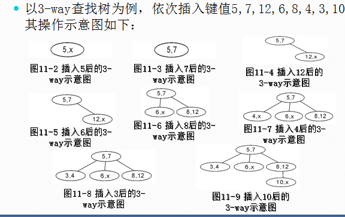
其满足上述条件：除根结点和叶子结点外，其它每个结点至少有ceil(5/2)=3个孩子（至少2个关键字）；当然最多5个孩子（最多4个关键字）。
下图中关键字为大写字母，顺序为字母升序。
插入（insert）操作
插入以下字符字母到空的5阶B-tree中：
C N G A H E K Q M F W L T Z D P R X Y S
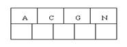
- 当咱们试着插入
H时，结点发现空间不够，以致将其分裂成2个结点，移动中间元素G上移到新的根结点中，在实现过程中，咱们把A和C留在当前结点中，而H和N放置新的其右邻居结点中
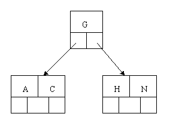
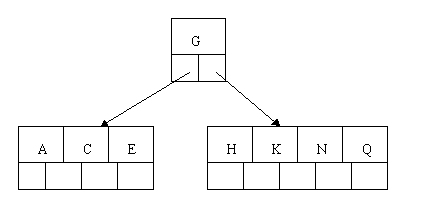
- 插入
M需要一次分裂，注意M恰好是中间关键字元素，以致向上移到父节点中
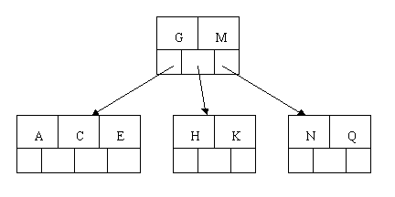
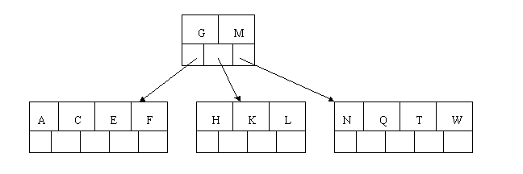
- 插入
Z时，最右的叶子结点空间满了，需要进行分裂操作，中间元素T上移到父节点中，注意通过上移中间元素， 树最终还是保持平衡，分裂结果的结点存在2个关键字元素。
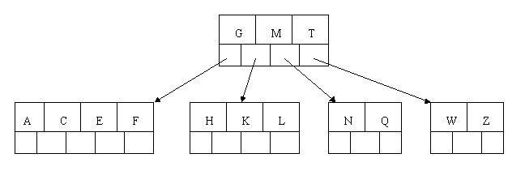
- 插入
D时，导致最左边的叶子结点被分裂，D恰好也是中间元素，上移到父节点中，然后字母P, R, X, Y陆续插入不需要任何分裂操作。
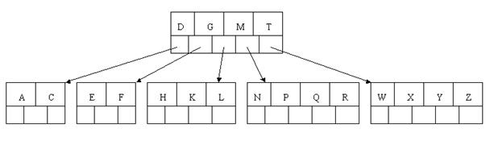
- 当插入
S时，含有N, P, Q, R的结点需要分裂，把中间元素Q上移到父节点中，但是情况来了，父节点中空间已经满了，所以也要进行分裂，将父节点中的中间元素M上移到新形成的根结点中，注意以前在父节点中的第三个指针在修改后包括D和G节点中。这样具体插入操作的完成。
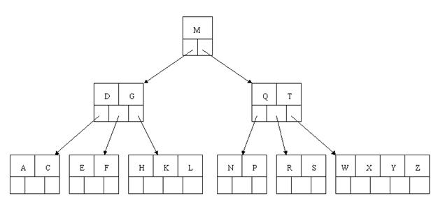
删除(delete)操作：
- 首先查找
B+-tree中需删除的元素，如果该元素在B+-tree中存在，则将该元素在其结点中进行删除
- 如果删除该元素后，首先判断该元素是否有左右孩子结点，如果有，则上移孩子结点中的某相近元素到父节点中，然后是移动之后的情况；如果没有，直接删除后，移动之后的情况。
删除元素，移动相应元素之后，如果某结点中元素数目小于ceil(m/2)-1，则需要看其某相邻兄弟结点是否丰满（结点中元素个数大于ceil(m/2)-1），如果丰满，则向父节点借一个元素来满足条件；如果其相邻兄弟都刚脱贫，即借了之后其结点数目小于ceil(m/2)-1，则该结点与其相邻的某一兄弟结点进行“合并”成一个结点，以此来满足条件
依次删除H, T, R, E
- 首先删除元素
H，当然首先查找H，H在一个叶子结点中，且该叶子结点元素数目3大于最小元素数目ceil(m/2)-1=2，则操作很简单，咱们只需要移动K至原来H的位置，移动L至K的位置（也就是结点中删除元素后面的元素向前移动）
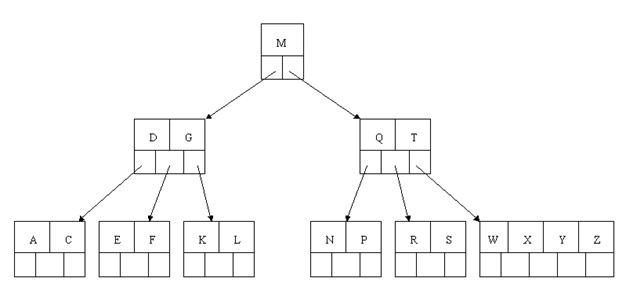
- 删除
T,因为T没有在叶子结点中，而是在中间结点中找到，咱们发现他的继承者W(字母升序的下个元素)，将W上移到T的位置，然后将原包含W的孩子结点中的W进行删除，这里恰好删除W后，该孩子结点中元素个数大于2，无需进行合并操作。
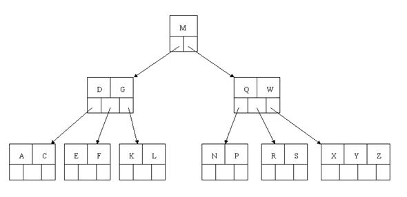
- 删除
R，R在叶子结点中,但是该结点中元素数目为2，删除导致只有1个元素，已经小于最小元素数目ceil(5/2)-1=2,如果其某个相邻兄弟结点中比较丰满（元素个数大于ceil(5/2)-1=2），则可以向父结点借一个元素，然后将最丰满的相邻兄弟结点中上移最后或最前一个元素到父节点中，在这个实例中，右相邻兄弟结点中比较丰满（3个元素大于2），所以先向父节点借一个元素W下移到该叶子结点中，代替原来S的位置，S前移；然后X在相邻右兄弟结点中上移到父结点中，最后在相邻右兄弟结点中删除X，后面元素前移。
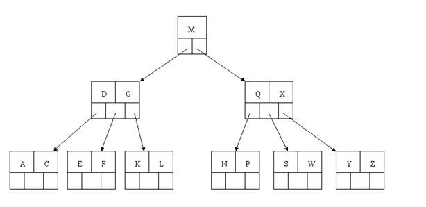
- 删除
E，删除后会导致很多问题，因为E所在的结点数目刚好达标，刚好满足最小元素个数（ceil(5/2)-1=2）,而相邻的兄弟结点也是同样的情况，删除一个元素都不能满足条件，所以需要该节点与某相邻兄弟结点进行合并操作；首先移动父结点中的元素（该元素在两个需要合并的两个结点元素之间）下移到其子结点中，然后将这两个结点进行合并成一个结点。所以在该实例中，咱们首先将父节点中的元素D下移到已经删除E而只有F的结点中，然后将含有D和F的结点和含有A, C的相邻兄弟结点进行合并成一个结点。
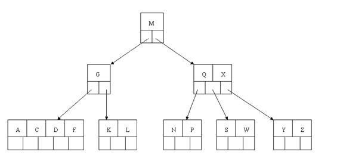
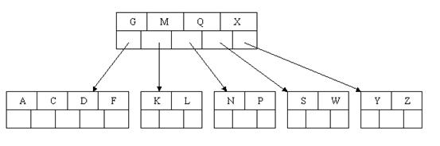
应文件系统所需而产生的一种B+-tree的变形树
B+-tree的特性：
- 所有关键字都出现在叶子结点的链表中（稠密索引），且链表中的关键字恰好是有序的；
- 不可能在非叶子结点命中；
- 非叶子结点相当于是叶子结点的索引（稀疏索引），叶子结点相当于是存储（关键字）数据的数据层；
- 更适合文件索引系统；
B+-树比B--tree更适合实际应用中操作系统的文件索引和数据库索引的原因
B+-tree的磁盘读写代价更低：B+-tree的内部结点并没有指向关键字具体信息的指针。因此其内部结点相对B--tree更小。如果把所有同一内部结点的关键字存放在同一盘块中，那么盘块所能容纳的关键字数量也越多。一次性读入内存中的需要查找的关键字也就越多。相对来说IO读写次数也就降低了。B+-tree的查询效率更加稳定：由于非终结点并不是最终指向文件内容的结点，而只是叶子结点中关键字的索引。所以任何关键字的查找必须走一条从根结点到叶子结点的路。所有关键字查询的路径长度相同，导致每一个数据的查询效率相当。
B+tree的应用

B*-tree（红黑树)
B*-tree是B+-tree的变体，在B+-tree的非根和非叶子结点再增加指向兄弟的指针；B*-tree定义了非叶子结点关键字个数至少为(2/3)*M，即块的最低使用率为2/3（代替B+树的1/2）

B+树的分裂：当一个结点满时，分配一个新的结点，并将原结点中1/2的数据复制到新结点，最后在父结点中增加新结点的指针；B+树的分裂只影响原结点和父结点，而不会影响兄弟结点，所以它不需要指向兄弟的指针。
B*树的分裂：当一个结点满时，如果它的下一个兄弟结点未满，那么将一部分数据移到兄弟结点中，再在原结点插入关键字，最后修改父结点中兄弟结点的关键字（因为兄弟结点的关键字范围改变了）；如果兄弟也满了，则在原结点与兄弟结点之间增加新结点，并各复制1/3的数据到新结点，最后在父结点增加新结点的指针。
所以，B*树分配新结点的概率比B+树要低，空间使用率更高；
小结
B树：二叉树，每个结点只存储一个关键字，等于则命中，小于走左结点，大于走右结点；
B-树：多路搜索树，每个结点存储M/2到M个关键字，非叶子结点存储指向关键字范围的子结点；所有关键字在整颗树中出现，且只出现一次，非叶子结点可以命中；
B+树：在B-树基础上，为叶子结点增加链表指针，所有关键字都在叶子结点
中出现，非叶子结点作为叶子结点的索引；B+树总是到叶子结点才命中；
B*树：在B+树基础上，为非叶子结点也增加链表指针，将结点的最低利用率从1/2提高到2/3；
局限性
- 查找必须从索引列的最左边开始
- 不能跳过索引中的列进行查询
- 存储引擎不能优化访问任何在第一个范围条件右边的列
访问就只能使用索引的头两列，因为like是范围条件
哈希索引（只有memory引擎支持显示的哈希索引）
建立在哈希表的基础上，只对使用了索引中的每一列精确查找有用。对于每一行计算出内索引的哈希码，把哈希码保存在索引中，并且保存一个指向哈希表中每一行的指针
其检索效率非常高，索引的检索可以一次定位
哈希索引的弊端
Hash索引仅仅能满足=, IN和<=>查询，不能使用范围查询。
由于Hash索引比较的是进行Hash运算之后的Hash值，所以它只能用于等值的过滤，不能用于基于范围的过滤，因为经过相应的Hash算法处理之后的Hash值的大小关系，并不能保证和Hash运算前完全一样。
由于Hash索引中存放的是经过Hash计算之后的Hash值，而且Hash值的大小关系并不一定和Hash运算前的键值完全一样，所以数据库无法利用索引的数据来避免任何排序运算。
对于组合索引，Hash索引在计算Hash值的时候是组合索引键合并后再一起计算Hash值，而不是单独计算Hash值，所以通过组合索引的前面一个或几个索引键进行查询的时候，Hash索引也无法被利用。
前面已经知道，Hash索引是将索引键通过Hash运算之后，将Hash运算结果的Hash值和所对应的行指针信息存放于一个Hash表中，由于不同索引键存在相同Hash值，所以即使取满足某个Hash键值的数据的记录条数，也无法从Hash索引中直接完成查询，还是要通过访问表中的实际数据进行相应的比较，并得到相应的结果。
Hash索引遇到大量Hash值相等的情况后性能并不一定就会比B-Tree索引高。
对于选择性比较低的索引键，如果创建Hash索引，那么将会存在大量记录指针信息存于同一个Hash值相关联。这样要定位某一条记录时就会非常麻烦，会浪费多次表数据的访问，而造成整体性能低下。
对使用索引的每一列的精确查找有用
空间索引（MYISAM必须使用MYSQL的GIS函数）
空间索引介于空间操作算法和空间对象之间，它通过筛选作用，大量与特定空间操作无关的空间对象被排除，从而提高空间操作的速度和效率
常见空间索引类型有BSP树、K－D－B树、R树、R+树和CELL树
全文索引（MYISAM的一种特殊索引）
CREATE TABLE articles (id INT UNSIGNED AUTO_INCREMENT NOT NULL PRIMARY KEY, title VARCHAR(200),body TEXT,FULLTEXT (title,body));
上面这是创建表的mysql语句，其中最后一句FULLTEXT (title,body)
SELECT表字段FROM表名WHERE MATCH(全文搜索表字段)AGAINST('搜索字符串');
MATCH相当于要找的列， 而AGAINST就是要找的内容。
高性能索引策略
mysql> select ... where TO_DAYS(CURRENT_DATE) - TO_DAYS(date_col)<=10;
mysql> select ... where data_cool >= DATE_SUB(CURRENT_DATE,INTERVAL 10 DAY);
- 前缀索引和索引选择性（不重复的索引值（基数）/表中所有行），唯一索引的选择率为1最佳，前缀的选择率接近
0.31
SELECT COUNT(DISTINCT LEFT(city,3))/COUNT(*) AS SEL3, COUNT(DISTINCT LEFT(city,4))/COUNT(*) AS SEL4,
COUNT(DISTINCT LEFT(city,5))/COUNT(*) AS SEL5…FROM TABLE_NAME;
前缀索引不能用于order by或group by
后缀索引，但是mysql不支持反向索引，可以保存反向字符，然后索引前缀
- 聚集索引(
NONCLUSTERED无论是聚集索引还是非聚集索引都是B树结构。)
数据库表行中数据的物理顺序与键值的逻辑（索引）顺序相同。一个表只能有一个聚集索引，因为一个表的物理顺序只有一种情况，所以，对应的聚集索引只能有一个。如果某索引不是聚集索引，则表中的行物理顺序与索引顺序不匹配，与非聚集索引相同，聚集索引有着更快的检索速度。
innoDB按照主键进行聚集，无主键使用唯一非空索引，无此索引会定义隐藏主键然后聚集，只聚集同一页的数据
聚类和非聚类对比图：
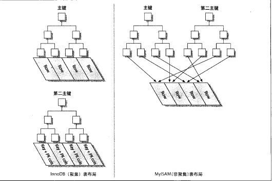
优点：
- 相关数据保存在一起
- 数据访问快
缺点:
- 插入速度依赖于插入顺序
- 更新聚集索引代价昂贵
- 聚集索引表插入新行或行的主键被更新会占用更多的磁盘
- 聚集表可能比权标扫描慢
- 非聚类索引需要两次索引查找（找行主键->找主键保存的数据）
适用情况：
- 含有大量非重复值的列。
- 使用
BETWEEN, >, >=, <或<=返回一个范围值的列
- 被连续访问的列
- 返回大型结果集的查询
经常被使用连接或GROUP BY子句的查询访问的列
- 覆盖索引：包含所有满足查询需要的数据的索引，
mysql只能用B-tree
以innodb引擎
EXPLAIN SELECT id, name FROM table_name WHERE name = ‘HOPPER’
Extra:Using where;Using index 此处覆盖取得主键查询
为排序使用索引扫描
产生排序的方式：文件排序，扫描有序索引
CREATE TABLE a(
… PRIMARY KEY(id),UNIQUE KEY date(date,nid,cid))
KEY idx_fk_nid(nid), KEY idx_fk_cid(cid)…);
SELECT id FROM table_name where date="2015-12-16" ORDER BY nid,cid;
能工作where date="2015-12-16" ORDER BY nid,cid;形成最左前缀
注意事项：
索引where（非范围条件）和order形成最左端索引
order by中的两列为最左前缀，使用相同的排序方向
前缀压缩索引（PACK_KEYS） 第一个值全排序，有相同前缀的，字节+后缀
缺点：cpu密集的负载慢几倍
避免多余和重复索引（类型相同，同样的顺序在同样的列上创建）
多余：索引（a, b）索引a多余，索引b不多余
索引和锁定 （从索引的开头开始，提取到满足第一个条件的行结束）
索引的实例研究
SELECT <clos> FROM table_name INNER JOIN (
SELECT <primary key cols> FROM table_name where x.a="m" ORDER BY rating LIMIT 100000,10) AS X USING(primary key cols)